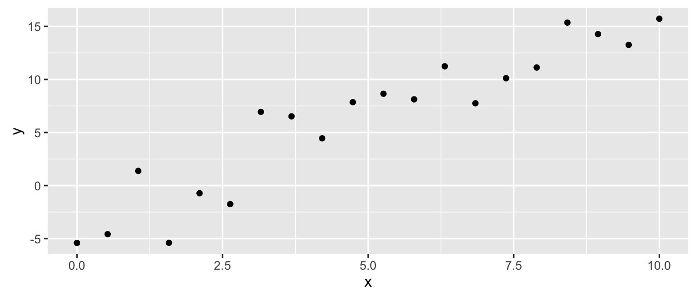

Chapter 2 Parameter Estimation
We have previously looked at ANOVA and regression models and, in many ways, they felt very similar. In this chapter we will introduce the theory that allows us to understand both models as a particular flavor of a larger class of models known as
First we clarify what a linear model is. A linear model is a model where the data (which we will denote using roman letters as \(\boldsymbol{x}\) and \(\boldsymbol{y}\)) and parameters of interest (which we denote using greek letters such as \(\boldsymbol{\alpha}\) and \(\boldsymbol{\beta}\)) interact only via addition and multiplication. The following are linear models:
| Model | Formula |
|---|---|
| ANOVA | \(y_{ij}=\mu+\tau_{i}+\epsilon_{ij}\) |
| Simple Regression | \(y_{i}=\beta_{0}+\beta_{1}x_{i}+\epsilon_{i}\) |
| Quadratic Term | \(y_{i}=\beta_{0}+\beta_{1}x_{i}+\beta_{2}x_{i}^{2}+\epsilon_{i}\) |
| General Regression | \(y_{i}=\beta_{0}+\beta_{1}x_{i,1}+\beta_{2}x_{i,2}+\dots+\beta_{p}x_{i,p}+\epsilon_{i}\) |
Notice in the Quadratic model, the square is not a parameter and we can consider \(x_{i}^{2}\) as just another column of data. This leads to the second example of multiple regression where we just add more slopes for other covariates where the \(p\) covariate is denoted \(\boldsymbol{x}_{\cdot,p}\) and might be some transformation (such as \(x^{2}\) or \(\log x\)) of another column of data. The critical point is that the transformation to the data \(\boldsymbol{x}\) does not depend on a parameter. Thus the following is a linear model \[ y_{i}=\beta_{0}+\beta_{1}x_{i}^{\alpha}+\epsilon_{i} \]
2.1 Simple Regression
We would like to represent all linear models in a similar compact matrix representation. This will allow us to make the transition between simple and multiple regression (and ANCOVA) painlessly.
To begin, we think about how to write the simple regression model using matrices and vectors that correspond the the data and the parameters. Notice we have
\[\begin{aligned} y_{1} & = \beta_{0}+\beta_{1}x_{1}+\epsilon_{1}\\ y_{2} & = \beta_{0}+\beta_{1}x_{2}+\epsilon_{2}\\ y_{3} & = \beta_{0}+\beta_{1}x_{3}+\epsilon_{3}\\ & \vdots\\ y_{n-1} & = \beta_{0}+\beta_{1}x_{n-1}+\epsilon_{n-1}\\ y_{n} & = \beta_{0}+\beta_{1}x_{n}+\epsilon_{n} \end{aligned}\]
where, as usual, \(\epsilon_{i}\stackrel{iid}{\sim}N\left(0,\sigma^{2}\right)\). These equations can be written using matrices as \[ \underset{\boldsymbol{y}}{\underbrace{\left[\begin{array}{c} y_{1}\\ y_{2}\\ y_{3}\\ \vdots\\ y_{n-1}\\ y_{n} \end{array}\right]}}=\underset{\boldsymbol{X}}{\underbrace{\left[\begin{array}{cc} 1 & x_{1}\\ 1 & x_{2}\\ 1 & x_{3}\\ \vdots & \vdots\\ 1 & x_{n-1}\\ 1 & x_{n} \end{array}\right]}}\underset{\boldsymbol{\beta}}{\underbrace{\left[\begin{array}{c} \beta_{0}\\ \beta_{1} \end{array}\right]}}+\underset{\boldsymbol{\epsilon}}{\underbrace{\left[\begin{array}{c} \epsilon_{1}\\ \epsilon_{2}\\ \epsilon_{3}\\ \vdots\\ \epsilon_{n-1}\\ \epsilon_{n} \end{array}\right]}} \] and we compactly write the model as \[ \boldsymbol{y}=\boldsymbol{X}\boldsymbol{\beta}+\boldsymbol{\epsilon} \] where \(\boldsymbol{X}\) is referred to as the design matrix and \(\boldsymbol{\beta}\) is the vector of location parameters we are interested in estimating.
2.1.1 Estimation of Location Paramters
Our next goal is to find the best estimate of \(\boldsymbol{\beta}\) given the data. To justify the formula, consider the case where there is no error terms (i.e. \(\epsilon_{i}=0\) for all \(i\)). Thus we have \[ \boldsymbol{y}=\boldsymbol{X}\boldsymbol{\beta} \] and our goal is to solve for \(\boldsymbol{\beta}\). To do this, we must use a matrix inverse, but since inverses only exist for square matrices, we pre-multiple by \(\boldsymbol{X}^{T}\) (notice that \(\boldsymbol{X}^{T}\boldsymbol{X}\) is a symmetric \(2\times2\) matrix). \[ \boldsymbol{X}^{T}\boldsymbol{y}=\boldsymbol{X}^{T}\boldsymbol{X}\boldsymbol{\beta} \] and then pre-multiply by \(\left(\boldsymbol{X}^{T}\boldsymbol{X}\right)^{-1}\). \[\begin{eqnarray*} \left(\boldsymbol{X}^{T}\boldsymbol{X}\right)^{-1}\boldsymbol{X}^{T}\boldsymbol{y} & = & \left(\boldsymbol{X}^{T}\boldsymbol{X}\right)^{-1}\boldsymbol{X}^{T}\boldsymbol{X}\boldsymbol{\beta}\\ \left(\boldsymbol{X}^{T}\boldsymbol{X}\right)^{-1}\boldsymbol{X}^{T}\boldsymbol{y} & = & \boldsymbol{\beta} \end{eqnarray*}\]This exercise suggests that \(\left(\boldsymbol{X}^{T}\boldsymbol{X}\right)^{-1}\boldsymbol{X}^{T}\boldsymbol{y}\) is a good place to start when looking for the maximum-likelihood estimator for \(\boldsymbol{\beta}\). It turns out that this quantity is in fact the maximum-likelihood estimator (and equivalently minimizes the sum-of-squared error). Therefore we will use it as our estimate of \(\boldsymbol{\beta}\). \[ \hat{\boldsymbol{\beta}}=\left(\boldsymbol{X}^{T}\boldsymbol{X}\right)^{-1}\boldsymbol{X}^{T}\boldsymbol{y} \]
2.1.2 Estimation of Variance Parameter
Recall our model is \[ y_{i}=\beta_{0}+\beta_{1}x_{i}+\epsilon_{i} \] where \(\epsilon_{i}\stackrel{iid}{\sim}N\left(0,\sigma^{2}\right)\).
Using our estimates \(\hat{\boldsymbol{\beta}}\) we can obtain predicted values for the regression line at any x-value. In particular we can find the predicted value for each \(x_i\) value in our dataset. \[ \hat{y}_i = \hat{\beta}_0 + \hat{\beta}_1 x_i \] Using matrix notation, I would write \(\hat{\boldsymbol{y}}=\boldsymbol{X}\hat{\boldsymbol{\beta}}\).
As usual we will find estimates of the noise terms (which we will call residuals or errors) via \[\begin{eqnarray*} \hat{\epsilon}_{i} & = & y_{i}-\hat{y}_{i}\\ & = & y_{i}-\left(\hat{\beta}_{0}+\hat{\beta}_{1}x_{i}\right) \end{eqnarray*}\] Writing \(\hat{\boldsymbol{y}}\) in matrix terms we have \[\begin{eqnarray*} \hat{\boldsymbol{y}} & = & \boldsymbol{X}\hat{\boldsymbol{\beta}}\\ & = & \boldsymbol{X}\left(\boldsymbol{X}^{T}\boldsymbol{X}\right)^{-1}\boldsymbol{X}^{T}\boldsymbol{y}\\ & = & \boldsymbol{H}\boldsymbol{y} \end{eqnarray*}\]where \(\boldsymbol{H}=\boldsymbol{X}\left(\boldsymbol{X}^{T}\boldsymbol{X}\right)^{-1}\boldsymbol{X}^{T}\) is often called the hat-matrix because it takes \(y\) to \(\hat{y}\) and has many interesting theoretical properties.
We can now estimate the error terms via \[\begin{eqnarray*} \hat{\boldsymbol{\epsilon}} & = & \boldsymbol{y}-\hat{\boldsymbol{y}}\\ & = & \boldsymbol{y}-\boldsymbol{H}\boldsymbol{y}\\ & = & \left(\boldsymbol{I}_{n}-\boldsymbol{H}\right)\boldsymbol{y} \end{eqnarray*}\] As usual we estimate \(\sigma^{2}\) using the mean-squared error \[\begin{eqnarray*} \hat{\sigma}^{2} & = & \frac{1}{n-2}\;\sum_{i=1}^{n}\hat{\epsilon}_{i}^{2}\\ \\ & = & \frac{1}{n-2}\;\hat{\boldsymbol{\epsilon}}^{T}\hat{\boldsymbol{\epsilon}} \end{eqnarray*}\] In the general linear model case where \(\boldsymbol{\beta}\) has \(p\) elements (and thus we have \(n-p\) degrees of freedom), the formula is \[\begin{eqnarray*} \hat{\sigma}^{2} & = & \frac{1}{n-p}\;\hat{\boldsymbol{\epsilon}}^{T}\hat{\boldsymbol{\epsilon}} \end{eqnarray*}\]2.1.3 Expectation and variance of a random vector
Just as we needed to derive the expected value and variance of \(\bar{x}\) in the previous semester, we must now do the same for \(\hat{\boldsymbol{\beta}}\). But to do this, we need some properties of expectations and variances.
In the following, let \(\boldsymbol{A}_{n\times p}\) and \(\boldsymbol{b}_{n\times1}\) be constants and \(\boldsymbol{\epsilon}_{n\times1}\) be a random vector.
Expectations are very similar to the scalar case where \[ E\left[\boldsymbol{\epsilon}\right]=\left[\begin{array}{c} E\left[\epsilon_{1}\right]\\ E\left[\epsilon_{2}\right]\\ \vdots\\ E\left[\epsilon_{n}\right] \end{array}\right] \] and any constants are pulled through the expectation \[ E\left[\boldsymbol{A}^{T}\boldsymbol{\epsilon}+\boldsymbol{b}\right]=\boldsymbol{A}^{T}\,E\left[\boldsymbol{\epsilon}\right]+\boldsymbol{b} \]
Variances are a little different. The variance of the vector \(\boldsymbol{\epsilon}\) is \[ Var\left(\boldsymbol{\epsilon}\right)=\left[\begin{array}{cccc} Var\left(\epsilon_{1}\right) & Cov\left(\epsilon_{1},\epsilon_{2}\right) & \dots & Cov\left(\epsilon_{1},\epsilon_{n}\right)\\ Cov\left(\epsilon_{2},\epsilon_{1}\right) & Var\left(\epsilon_{2}\right) & \dots & Cov\left(\epsilon_{2},\epsilon_{n}\right)\\ \vdots & \vdots & \ddots & \vdots\\ Cov\left(\epsilon_{n},\epsilon_{1}\right) & Cov\left(\epsilon_{n},\epsilon_{2}\right) & \dots & Var\left(\epsilon_{1}\right) \end{array}\right] \] and additive constants are ignored, but multiplicative constants are pulled out as follows: \[ Var\left(\boldsymbol{A}^{T}\boldsymbol{\epsilon}+\boldsymbol{b}\right)=Var\left(\boldsymbol{A}^{T}\boldsymbol{\epsilon}\right)=\boldsymbol{A}^{T}\,Var\left(\boldsymbol{\epsilon}\right)\,\boldsymbol{A} \]
2.1.4 Variance of Location Parameters
We next derive the sampling variance of our estimator \(\hat{\boldsymbol{\beta}}\) by first noting that \(\boldsymbol{X}\) and \(\boldsymbol{\beta}\) are constants and therefore \[\begin{eqnarray*} Var\left(\boldsymbol{y}\right) & = & Var\left(\boldsymbol{X}\boldsymbol{\beta}+\boldsymbol{\epsilon}\right)\\ & = & Var\left(\boldsymbol{\epsilon}\right)\\ & = & \sigma^{2}\boldsymbol{I}_{n} \end{eqnarray*}\] because the error terms are independent and therefore \(Cov\left(\epsilon_{i},\epsilon_{j}\right)=0\) when \(i\ne j\) and \(Var\left(\epsilon_{i}\right)=\sigma^{2}\). Recalling that constants come out of the variance operator as the constant \[\begin{eqnarray*} Var\left(\hat{\boldsymbol{\beta}}\right) & = & Var\left(\left(\boldsymbol{X}^{T}\boldsymbol{X}\right)^{-1}\boldsymbol{X}^{T}\boldsymbol{y}\right)\\ & = & \left(\boldsymbol{X}^{T}\boldsymbol{X}\right)^{-1}\boldsymbol{X}^{T}\,Var\left(\boldsymbol{y}\right)\,\boldsymbol{X}\left(\boldsymbol{X}^{T}\boldsymbol{X}\right)^{-1}\\ & = & \left(\boldsymbol{X}^{T}\boldsymbol{X}\right)^{-1}\boldsymbol{X}^{T}\,\sigma^{2}\boldsymbol{I}_{n}\,\boldsymbol{X}\left(\boldsymbol{X}^{T}\boldsymbol{X}\right)^{-1}\\ & = & \sigma^{2}\left(\boldsymbol{X}^{T}\boldsymbol{X}\right)^{-1}\boldsymbol{X}^{T}\boldsymbol{X}\left(\boldsymbol{X}^{T}\boldsymbol{X}\right)^{-1}\\ & = & \sigma^{2}\left(\boldsymbol{X}^{T}\boldsymbol{X}\right)^{-1} \end{eqnarray*}\]Using this, the standard error (i.e. the estimated standard deviation) of \(\hat{\beta}_{j}\) (for any \(j\) in \(1,\dots,p\)) is \[ StdErr\left(\hat{\beta}_{j}\right)=\sqrt{\hat{\sigma}^{2}\left[\left(\boldsymbol{X}^{T}\boldsymbol{X}\right)^{-1}\right]_{jj}} \]
2.1.5 Confidence intervals and hypothesis tests
We can now state the general method of creating confidence intervals and perform hypothesis tests for any element of \(\boldsymbol{\beta}\).
The confidence interval formula is (as usual) \[ \hat{\beta}_{j}\pm t_{n-p}^{1-\alpha/2}\,StdErr\left(\hat{\beta}_{j}\right) \] and a test statistic for testing \(H_{0}:\,\beta_{j}=0\) versus \(H_{a}:\,\beta_{j}\ne0\) is \[ t_{n-p}=\frac{\hat{\beta}_{j}-0}{StdErr\left(\hat{\beta}_{j}\right)} \]
2.1.6 Summary of pertinent results
- \(\hat{\boldsymbol{\beta}}=\left(\boldsymbol{X}^{T}\boldsymbol{X}\right)^{-1}\boldsymbol{X}^{T}\boldsymbol{y}\) is the unbiased maximum-likelihood estimator of \(\boldsymbol{\beta}\).
- The Central Limit Theorem applies to each element of \(\boldsymbol{\beta}\). That is, as \(n\to\infty\), the distribution of \(\hat{\beta}_{j}\to N\left(\beta_{j},\left[\sigma^{2}\left(\boldsymbol{X}^{T}\boldsymbol{X}\right)^{-1}\right]_{jj}\right)\).
- The error terms can be calculated via \[\begin{eqnarray*} \hat{\boldsymbol{y}} & = & \boldsymbol{X}\hat{\boldsymbol{\beta}}\\ \hat{\boldsymbol{\epsilon}} & = & \boldsymbol{y}-\hat{\boldsymbol{y}} \end{eqnarray*}\]
The estimate of \(\sigma^{2}\) is \[ \hat{\sigma}^{2}=\frac{1}{n-p}\;\hat{\boldsymbol{\epsilon}}^{T}\hat{\boldsymbol{\epsilon}} \]
The standard error (i.e. the estimated standard deviation) of \(\hat{\beta}_{j}\) (for any \(j\) in \(1,\dots,p\)) is \[ StdErr\left(\hat{\beta}_{j}\right)=\sqrt{\hat{\sigma}^{2}\left[\left(\boldsymbol{X}^{T}\boldsymbol{X}\right)^{-1}\right]_{jj}} \]
2.1.7 An example in R
Here we will work an example in R and see the calculations. Consider the following data:
library(ggplot2)
n <- 20
x <- seq(0,10, length=n)
y <- -3 + 2*x + rnorm(n, sd=2)
my.data <- data.frame(x=x, y=y)
ggplot(my.data) + geom_point(aes(x=x,y=y))
First we must create the design matrix \(\boldsymbol{X}\). Recall \[ \boldsymbol{X}=\left[\begin{array}{cc} 1 & x_{1}\\ 1 & x_{2}\\ 1 & x_{3}\\ \vdots & \vdots\\ 1 & x_{n-1}\\ 1 & x_{n} \end{array}\right] \] and can be created in R via the following:
X <- cbind( rep(1,n), x)Given \(\boldsymbol{X}\) and \(\boldsymbol{y}\) we can calculate \[ \hat{\boldsymbol{\beta}}=\left(\boldsymbol{X}^{T}\boldsymbol{X}\right)^{-1}\boldsymbol{X}^{T}\boldsymbol{y} \] in R using the following code:
XtXinv <- solve( t(X) %*% X )
beta.hat <- XtXinv %*% t(X) %*% y
beta.hat## [,1]
## -3.174483
## x 2.076017y.hat <- X %*% beta.hat
residuals <- y - y.hatNow that we have the residuals, we can calculate \(\hat{\sigma}^{2}\) and the standard errors of \(\hat{\beta}_{j}\) \[ \hat{\sigma}^{2}=\frac{1}{n-p}\,\hat{\boldsymbol{\epsilon}}^{T}\hat{\boldsymbol{\epsilon}} \] \[ StdErr\left(\hat{\beta}_{j}\right)=\sqrt{\hat{\sigma}^{2}\left[\left(\boldsymbol{X}^{T}\boldsymbol{X}\right)^{-1}\right]_{jj}} \]
sigma2.hat <- ( t(residuals) %*% residuals) / (n-2)
sigma.hat <- sqrt( sigma2.hat )
std.errs <- sqrt( sigma2.hat * diag(XtXinv) )We now print out the important values and compare them to the summary output given by the lm() function in R.
beta.hat## [,1]
## -3.174483
## x 2.076017sigma.hat## [,1]
## [1,] 1.669946std.errs## [1] 0.7196563 0.1230397model <- lm(y~x)
summary(model)##
## Call:
## lm(formula = y ~ x)
##
## Residuals:
## Min 1Q Median 3Q Max
## -3.0036 -0.8474 -0.0207 0.7270 3.2699
##
## Coefficients:
## Estimate Std. Error t value Pr(>|t|)
## (Intercept) -3.1745 0.7197 -4.411 0.000337 ***
## x 2.0760 0.1230 16.873 1.77e-12 ***
## ---
## Signif. codes: 0 '***' 0.001 '**' 0.01 '*' 0.05 '.' 0.1 ' ' 1
##
## Residual standard error: 1.67 on 18 degrees of freedom
## Multiple R-squared: 0.9405, Adjusted R-squared: 0.9372
## F-statistic: 284.7 on 1 and 18 DF, p-value: 1.773e-12We calculate \(95\%\) confidence intervals via:
lwr <- beta.hat - qt(.975, n-2) * std.errs
upr <- beta.hat + qt(.975, n-2) * std.errs
CI <- cbind(lwr,upr)
colnames(CI) <- c('lower','upper')
rownames(CI) <- c('Intercept', 'x')
CI## lower upper
## Intercept -4.686425 -1.662542
## x 1.817520 2.334514These intervals are the same as what we get when we use the confint() function.
confint(model)## 2.5 % 97.5 %
## (Intercept) -4.686425 -1.662542
## x 1.817520 2.3345142.2 ANOVA model
The anova model is also a linear model and all we must do is create a appropriate design matrix. Given the design matrix \(\boldsymbol{X}\), all the calculations are identical as in the simple regression case.
2.2.1 Cell means representation
Recall the cell means representation is \[ y_{i,j}=\mu_{i}+\epsilon_{i,j} \] where \(y_{i,j}\) is the \(j\)th observation within the \(i\)th group. To clearly show the creation of the \(\boldsymbol{X}\) matrix, let the number of groups be \(p=3\) and the number of observations per group be \(n_{i}=4\). We now expand the formula to show all the data. \[\begin{eqnarray*} y_{1,1} & = & \mu_{1}+\epsilon_{1,1}\\ y_{1,2} & = & \mu_{1}+\epsilon_{1,2}\\ y_{1,3} & = & \mu_{1}+\epsilon_{1,3}\\ y_{1,4} & = & \mu_{1}+\epsilon_{1,4}\\ y_{2,1} & = & \mu_{2}+\epsilon_{2,1}\\ y_{2,2} & = & \mu_{2}+\epsilon_{2,2}\\ y_{2,3} & = & \mu_{2}+\epsilon_{2,3}\\ y_{2,4} & = & \mu_{2}+\epsilon_{2,4}\\ y_{3,1} & = & \mu_{3}+\epsilon_{3,1}\\ y_{3,2} & = & \mu_{3}+\epsilon_{3,2}\\ y_{3,3} & = & \mu_{3}+\epsilon_{3,3}\\ y_{3,4} & = & \mu_{3}+\epsilon_{3,4} \end{eqnarray*}\] In an effort to write the model as \(\boldsymbol{y}=\boldsymbol{X}\boldsymbol{\beta}+\boldsymbol{\epsilon}\) we will write the above as \[\begin{eqnarray*} y_{1,1} & = & 1\mu_{1}+0\mu_{2}+0\mu_{3}+\epsilon_{1,1}\\ y_{1,2} & = & 1\mu_{1}+0\mu_{2}+0\mu_{3}+\epsilon_{1,2}\\ y_{1,3} & = & 1\mu_{1}+0\mu_{2}+0\mu_{3}+\epsilon_{1,3}\\ y_{1,4} & = & 1\mu_{1}+0\mu_{2}+0\mu_{3}+\epsilon_{1,4}\\ y_{2,1} & = & 0\mu+1\mu_{2}+0\mu_{3}+\epsilon_{2,1}\\ y_{2,2} & = & 0\mu+1\mu_{2}+0\mu_{3}+\epsilon_{2,2}\\ y_{2,3} & = & 0\mu+1\mu_{2}+0\mu_{3}+\epsilon_{2,3}\\ y_{2,4} & = & 0\mu+1\mu_{2}+0\mu_{3}+\epsilon_{2,4}\\ y_{3,1} & = & 0\mu+0\mu_{2}+1\mu_{3}+\epsilon_{3,1}\\ y_{3,2} & = & 0\mu+0\mu_{2}+1\mu_{3}+\epsilon_{3,2}\\ y_{3,3} & = & 0\mu+0\mu_{2}+1\mu_{3}+\epsilon_{3,3}\\ y_{3,4} & = & 0\mu+0\mu_{2}+1\mu_{3}+\epsilon_{3,4} \end{eqnarray*}\]and we will finally be able to write the matrix version \[ \underset{\boldsymbol{y}}{\underbrace{\left[\begin{array}{c} y_{1,1}\\ y_{1,2}\\ y_{1,3}\\ y_{1,4}\\ y_{2,1}\\ y_{2,2}\\ y_{2,3}\\ y_{2,4}\\ y_{3,1}\\ y_{3,2}\\ y_{3,3}\\ y_{3,4} \end{array}\right]}}=\underset{\mathbf{X}}{\underbrace{\left[\begin{array}{ccc} 1 & 0 & 0\\ 1 & 0 & 0\\ 1 & 0 & 0\\ 1 & 0 & 0\\ 0 & 1 & 0\\ 0 & 1 & 0\\ 0 & 1 & 0\\ 0 & 1 & 0\\ 0 & 0 & 1\\ 0 & 0 & 1\\ 0 & 0 & 1\\ 0 & 0 & 1 \end{array}\right]}}\underset{\boldsymbol{\beta}}{\underbrace{\left[\begin{array}{c} \mu_{1}\\ \mu_{2}\\ \mu_{3} \end{array}\right]}}+\underset{\boldsymbol{\epsilon}}{\underbrace{\left[\begin{array}{c} \epsilon_{1,1}\\ \epsilon_{1,2}\\ \epsilon_{1,3}\\ \epsilon_{1,4}\\ \epsilon_{2,1}\\ \epsilon_{2,2}\\ \epsilon_{2,3}\\ \epsilon_{2,4}\\ \epsilon_{3,1}\\ \epsilon_{3,2}\\ \epsilon_{3,3}\\ \epsilon_{3,4} \end{array}\right]}} \] \[ \] Notice that each column of the \(\boldsymbol{X}\) matrix is acting as an indicator if the observation is an element of the appropriate group. As such, these are often called indicator variables. Another term for these, which I find less helpful, is dummy variables.
2.2.2 Offset from reference group
In this model representation of ANOVA, we have an overall mean and then offsets from the control group (which will be group one). The model is thus \[ y_{i,j}=\mu+\tau_{i}+\epsilon_{i,j} \] where \(\tau_{1}=0\). We can write this in matrix form as \[ \underset{\boldsymbol{y}}{\underbrace{\left[\begin{array}{c} y_{1,1}\\ y_{1,2}\\ y_{1,3}\\ y_{1,4}\\ y_{2,1}\\ y_{2,2}\\ y_{2,3}\\ y_{2,4}\\ y_{3,1}\\ y_{3,2}\\ y_{3,3}\\ y_{3,4} \end{array}\right]}}=\underset{\mathbf{X}}{\underbrace{\left[\begin{array}{ccc} 1 & 0 & 0\\ 1 & 0 & 0\\ 1 & 0 & 0\\ 1 & 0 & 0\\ 1 & 1 & 0\\ 1 & 1 & 0\\ 1 & 1 & 0\\ 1 & 1 & 0\\ 1 & 0 & 1\\ 1 & 0 & 1\\ 1 & 0 & 1\\ 1 & 0 & 1 \end{array}\right]}}\underset{\boldsymbol{\beta}}{\underbrace{\left[\begin{array}{c} \mu\\ \tau_{2}\\ \tau_{3} \end{array}\right]}}+\underset{\boldsymbol{\epsilon}}{\underbrace{\left[\begin{array}{c} \epsilon_{1,1}\\ \epsilon_{1,2}\\ \epsilon_{1,3}\\ \epsilon_{1,4}\\ \epsilon_{2,1}\\ \epsilon_{2,2}\\ \epsilon_{2,3}\\ \epsilon_{2,4}\\ \epsilon_{3,1}\\ \epsilon_{3,2}\\ \epsilon_{3,3}\\ \epsilon_{3,4} \end{array}\right]}} \]
2.3 Exercises
We will do a simple ANOVA analysis on example 8.2 from Ott & Longnecker using the matrix representation of the model. A clinical psychologist wished to compare three methods for reducing hostility levels in university students, and used a certain test (HLT) to measure the degree of hostility. A high score on the test indicated great hostility. The psychologist used 24 students who obtained high and nearly equal scores in the experiment. eight were selected at random from among the 24 problem cases and were treated with method 1. Seven of the remaining 16 students were selected at random and treated with method 2. The remaining nine students were treated with method 3. All treatments were continued for a one-semester period. Each student was given the HLT test at the end of the semester, with the results show in the following table. (This analysis was done in section 8.3 of my STA 570 notes)
Method Values 1 96, 79, 91, 85, 83, 91, 82, 87 2 77, 76, 74, 73, 78, 71, 80 3 66, 73, 69, 66, 77, 73, 71, 70, 74 We will be using the cell means model of ANOVA \[ y_{ij}=\beta_{i}+\epsilon_{ij} \] where \(\beta_{i}\) is the mean of group \(i\) and \(\epsilon_{ij}\stackrel{iid}{\sim}N\left(0,\sigma^{2}\right)\).
Create one vector of all 24 hostility test scores
y. (Use thec()function.)Create a design matrix
Xwith dummy variables for columns that code for what group an observation belongs to. Notice that will be a \(24\) rows by \(3\) column matrix. An R function that might be handy is which will bind two vectors or matrices together along the columns. (There is also a corresponding function that binds vectors/matrices along rows.)
Find \(\hat{\boldsymbol{\beta}}\) using the matrix formula given in class. The R function computes the matrix transpose \(\mathbf{A}^{T}\), computes \(\mathbf{A}^{-1}\), and the operator does matrix multiplication (used as ).
Examine the matrix \(\left(\mathbf{X}^{T}\mathbf{X}\right)^{-1}\mathbf{X}^{T}\). What do you notice about it? In particular, think about the result when you right multiply by \(\mathbf{y}\). How does this matrix calculate the appropriate group means and using the appropriate group sizes \(n_i\)?
We will calculate the y-intercept and slope estimates in a simple linear model using matrix notation. We will use a data set that gives the diameter at breast height (DBH) versus tree height for a randomly selected set of trees. In addition, for each tree, a ground measurement of crown closure (CC) was taken. Larger values of crown closure indicate more shading and is often associated with taller tree morphology (possibly). We will be interested in creating a regression model that predicts height based on DBH and CC. In the interest of reduced copying, we will only use 10 observations. (Note: I made this data up and the DBH values might be unrealistic. Don’t make fun of me.)
DBH 30.5 31.5 31.7 32.3 33.3 35 35.4 35.6 36.3 37.8 CC 0.74 0.69 0.65 0.72 0.58 0.5 0.6 0.7 0.52 0.6 Height 58 64 65 70 68 63 78 80 74 76 We are interested in fitting the regression model \[y_{i}=\beta_{0}+\beta_{1}x_{i,1}+\beta_{2}x_{i,2}+\epsilon_{i}\] where \(\beta_{0}\) is the y-intercept and \(\beta_{1}\) is the slope parameter associated with DBH and \(\beta_{2}\) is the slope parameter associated with Crown Closure.
- Create a vector of all 10 heights \(\mathbf{y}\).
- Create the design matrix \(\mathbf{X}\).
- Find \(\hat{\boldsymbol{\beta}}\) using the matrix formula given in class.
- Compare your results to the estimated coefficients you get using the
lm()function. To add the second predictor to the model, your call tolm()should look something likelm(Height ~ DBH + CrownClosure).